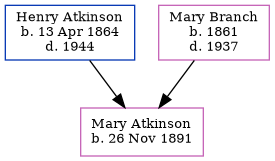

Maud Lavinia Atkinson 1890 - 1970
[ Home ] | [ Calendar ] | [ Surnames Index ] | [ Census Index ] | [ Family History ]The eldest of 6 children of Henry Atkinson (a station master) and Mary Branch, Maud Atkinson, the fourth cousin once-removed on the father's side of Nigel Horne, was born in Red Pine, Gloucester, New Brunswick, Canada on Oct 2, 18901,2. In 1901, she was living in New Brunswick, Canada2.
She died on Apr 1, 1970 in Fredericton, York, New Brunswick.
Parents
- Henry Douglas was born on Apr 13, 1864
- Mary Harper was born in 1861
Citations
- Canada Census 1891 - Findmypast
- Canada Census 1901 - Findmypast (was the daughter of the head of the household)
Media
New Brunswick Birth and Baptism Index 1769-1899 - R_684908270
Canada Census 1891 - CAN/CENSUS/1891/00307131
Family Tree
Generated by ged2site. Last updated on Jun 11, 2024